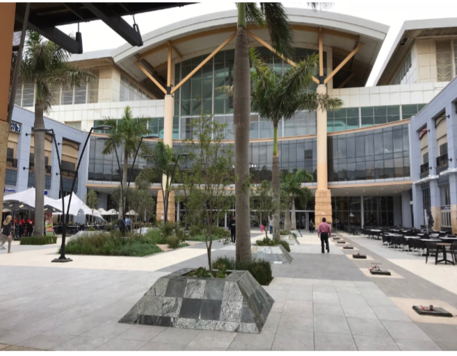
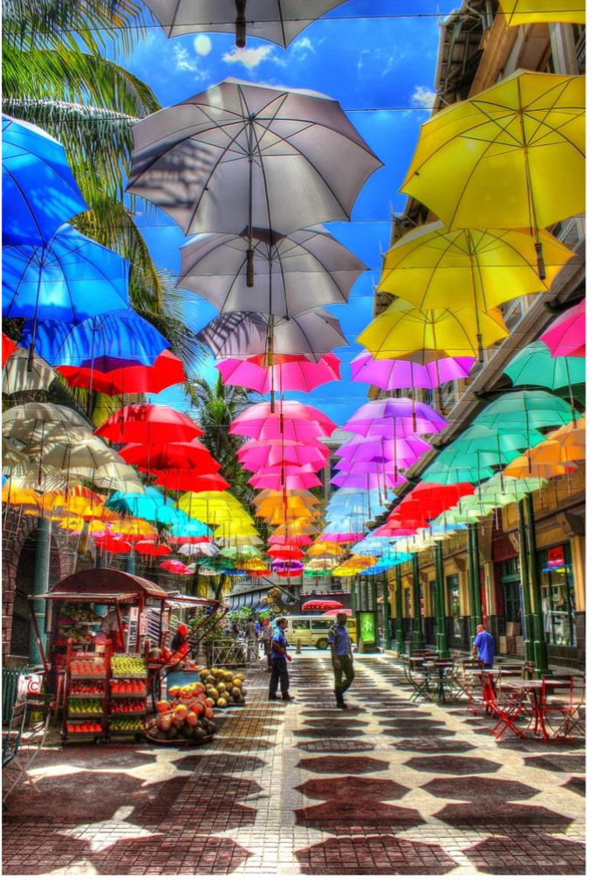

The Pine City Mall is a shopping center located in Pine City, Minnesota. If you're referring to the mall’s history or its development over the past 20 years, here’s a general overview:
Early 2000s: In the early 2000s, Pine City Mall served as a small regional shopping hub, offering basic retail options to residents and visitors in Pine City and the surrounding areas. Its size and tenant mix were relatively modest compared to larger malls in urban areas.
Mid-2000s to Early 2010s: During this period, many small-town malls, including Pine City Mall, faced challenges due to the rise of online shopping and economic shifts. Some stores might have closed or moved out, and the mall may have undergone periods of decline or restructuring
Recent Years: In recent years, there has been a trend toward revitalizing smaller malls by repurposing space, adding new tenants, or incorporating mixed-use elements. Pine City Mall may have seen some updates or renovations to attract new businesses and improve the shopping experience. Local developments or community events might also play a role in keeping the mall relevant..
|  |  |
|---|